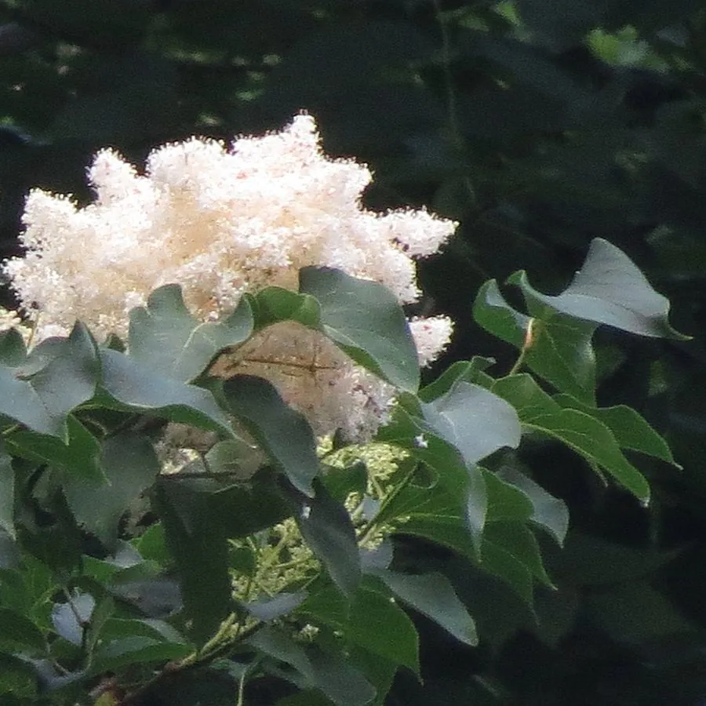

灌木与花木 · 植物界
暴马丁香 Syringa reticulata

木犀科落叶小乔木，夏季开白色圆锥花序，花期较晚、花香浓郁，树皮入药，中国东北与华北山地常见。
- 分类
- 门被子植物门纲木兰纲目唇形目科木犀科属丁香属
- 栖息环境
- 海拔 1000–2000 米的山地林缘、溪边与灌丛，喜光耐寒
- 地理分布
- 中国东北、华北；朝鲜半岛、日本、俄罗斯远东地区
- 保护级别
- 暂无评估；中国未列入国家重点保护野生植物名录
物种志
暴马丁香为木犀科丁香属落叶小乔木，高 4–8 米，最高可达 10 米，树皮灰褐色、纵裂。叶片对生，卵形至椭圆形，全缘。圆锥花序顶生，大型，花白色，花冠筒状，4 裂，香气浓郁，花期 6 月；蒴果长圆形，果期 8–9 月。
暴马丁香原产中国东北、华北及朝鲜半岛、日本、俄罗斯远东地区，生于海拔 1000–2000 米的山地林缘与溪边。它喜光，也耐半阴，耐寒性极强，适宜深厚肥沃、排水良好的土壤。花期比常见的丁香晚，夏季白花满树、香气远溢，是东北城市重要的夏季花木。树皮入药称“暴马子皮”，有清肺祛痰、止咳平喘之效；木材纹理直，可制器具。
形态与习性
- 株高4–8 m，最高可达 10 m
- 花期6 月，白色圆锥花序
- 果期8–9 月，蒴果长圆形
- 光照喜光，也耐半阴
- 水分喜湿润，耐寒
- 土壤深厚肥沃、排水良好的壤土
- 主要用途夏季观花，树皮入药，木材制器具
趣味知识
- 暴马丁香的花期比常见丁香晚约一个月，夏季才盛开。
- 树皮入药称“暴马子皮”，有止咳平喘之效。
- 它是丁香属中体型较大的种类，可长成小乔木。
- 东北林区常在夏季采集暴马丁香的花与树皮。